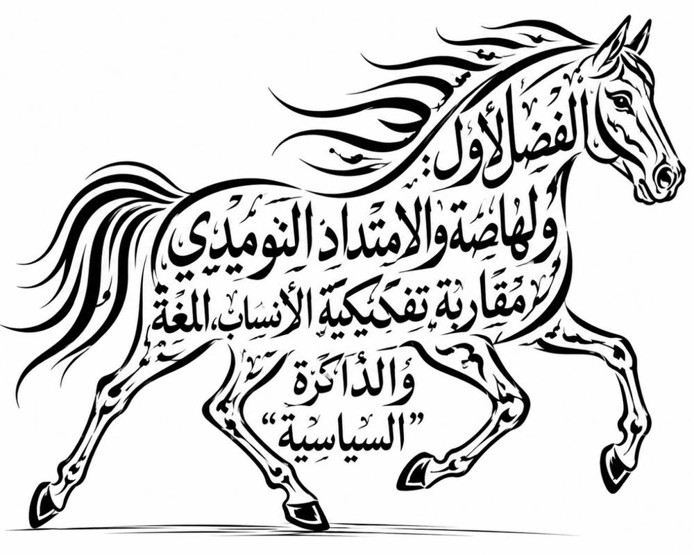

الفصل الأول: ولهاصة والامتداد النوميدي; مقاربة تفكيكية في الأنساب، اللغة والذاكرة السياسية

مقدمة
يُعدّ البحث في الجذور التاريخية لقبيلة ولهاصة من الإشكاليات المعرفية التي تفرض تجاوز المقاربات التقليدية القائمة على السرد الإخباري أو القراءة القبلية الضيقة، والانتقال نحو تحليل متعدد المستويات يدمج بين التاريخ واللسانيات والأنثروبولوجيا والذاكرة الجماعية. فالقضية المطروحة لا تتعلق بأصل قبيلة محلية فحسب، بل بإعادة فحص فرضية استمرارية البنى النوميدية داخل الفضاء الاجتماعي والسياسي للمغرب الأوسط عبر مسار زمني يمتد لأكثر من ألفي سنة.
لقد أدى تعاقب التحولات السياسية الكبرى، من العهد النوميدي إلى الفتح الإسلامي ثم إلى إعادة التشكل القبلي خلال العصر الوسيط، إلى اختفاء العديد من التسميات القديمة أو تحولها تدريجياً، دون أن يعني ذلك بالضرورة زوال البنى الاجتماعية التي كانت تحملها. فالتاريخ لا ينتقل دائماً عبر المؤسسات السياسية، بل كثيراً ما يُختزن داخل الأسماء والأنساب والمجالات الجغرافية والذاكرة الشفوية التي تحتفظ بعناصر من الماضي العميق بصورة قد تبدو متفرقة، لكنها تكتسب دلالتها عندما تُقرأ ضمن إطار تفسيري متكامل1 .
وفي هذا السياق، يقترح هذا الفصل مقاربة تفكيكية تقوم على تداخل ثلاثة حقول معرفية أساسية: علم الأنساب (Genealogy)، وعلم أسماء الأعلام (Onomastics)، وفقه اللغة التاريخي (Philology)، باعتبارها أدوات قادرة على إعادة بناء المسارات الطويلة لتحول الأسماء والهويات الجماعية في شمال إفريقيا 2.وتنطلق الدراسة من فرضيتين مترابطتين. تتمثل الأولى في العلاقة الممكنة بين «مادغيس الأبتر»3، بوصفه الجد الجامع في الأنساب الأمازيغية الإسلامية، وبين «إيمادغسن4»، أحد أبرز الرموز الملكية للنظام النوميدي القديم، بما قد يعكس انتقال صورة الملك المؤسس إلى شخصية نسبية جامعة داخل البناء القبلي اللاحق5 .
أما الفرضية الثانية، فتتعلق بإمكانية وجود صلة تاريخية ولسانية بين الاسم الملكي النوميدي «إيلاص (Ilas)6» والاسم القبلي «ولهاص7»، استناداً إلى آليات التطور الصوتي المعروفة في اللغات الأمازيغية. غير أن هذه الفرضية تظل بحاجة إلى مزيد من التحقق العلمي من خلال المقارنة اللسانية والأثرية، لأن المصادر القديمة لا تقدم دليلاً مباشراً على هذا الانتقال الاسمي، وإنما تسمح ببناء نموذج تفسيري قائم على تقاطع القرائن8.
ولا تُطرح هذه الفرضيات باعتبارها حقائق نهائية، بل كنماذج تفسيرية تستدعي الاختبار والنقد والمقارنة المستمرة مع المعطيات التاريخية والأثرية واللغوية المتاحة. فالمنهج العلمي يقتضي التمييز بين اليقين التاريخي والاحتمال التفسيري، مع الحرص على بناء الاستنتاجات انطلاقاً من مبدأ تقاطع القرائن لا من التشابهات المعزولة.
ومن هذا المنطلق، يُنظر إلى ولهاصة ليس باعتبارها مجرد كيان قبلي معاصر، وإنما بوصفها مختبراً تاريخياً يسمح بدراسة آليات انتقال الذاكرة السياسية النوميدية عبر العصور، وفهم الكيفية التي أعادت بها المجتمعات المحلية إنتاج هوياتها القديمة داخل أطر اجتماعية جديدة. وبذلك، يتحول تاريخ ولهاصة إلى مدخل أوسع لإعادة قراءة مسألة الاستمرارية الحضارية في شمال إفريقيا، والكشف عن الأبعاد العميقة التي تربط القبائل المعاصرة بالإرث النوميدي. الذي ظل حاضراً، بدرجات متفاوتة، في الجغرافيا واللغة والذاكرة الجماعية.
يتناول هذا الفصل إعادة قراءة البنية السياسية لنوميديا Numidia من خلال نقد الفرضية التقليدية التي تعتبر الماسيل (Massyli) والماسيسيل (Massaesyli) تجمعات قبيلة منفصلة عن بعضها9. وتوضح أن هذه المقاربة تعاني من إسقاط مفاهيم إثنية حديثة على واقع تاريخي كانت تحكمه تنظيمات قبلية وسياسية مرنة.
في المقابل، اقترحنا بديلاً يقوم على فكرة “الوحدة السياسية ذات القطبين”، حيث يُفهم الانقسام بين الشرق (الماسيل) والغرب (الماسيسيل) باعتباره توزيعاً مجاليّاً للسلطة داخل كيان واحد، وليس انفصالاً إثنياً. ويعزز هذا التصور استمرارية نمط الثنائية الجغرافية في البنى المحلية اللاحقة، مثل ثنائية “ولهاصة الشراقة” و“ولهاصة الغرابة”.
وتخلص الدراسة إلى أن المجال النوميدي كان بنية سياسية موحدة متعددة المراكز، تتعايش فيها الوحدة والانقسام كآلية داخلية لتنظيم السلطة، وليس كتعبير عن اختلافات إثنية أصلية.
.2.1إعادة قراءة البنية الاسمية في التاريخ النوميدي
في إطار مقاربة تاريخية-نقدية تعتمد على تقاطع المعطيات الأركيولوجية مع المصادر الإخبارية العربية والكتابات الكلاسيكية، يمكن تفسير تطور التسمية القبلية في شمال إفريقيا بوصفه سيرورة تاريخية طويلة انتقلت فيها البنى السياسية من أشكال ملكية مركزية في العصور القديمة إلى تنظيمات قبلية ذات طابع نسبي في العصور اللاحقة. ويُلاحظ أن هذا التحول لم يكن مجرد تغير اجتماعي بسيط، بل ارتبط بإعادة تشكيل الذاكرة التاريخية وإعادة إنتاجها داخل أنساق خطابية مختلفة.
في المرحلة الأولى، الممتدة إلى العصر النوميدي (القرن الثالث–الأول ق.م)، تشير المعطيات الأثرية إلى وجود كيانات سياسية منظمة مثل الممالك الماسيلية والماسيسيلية، والتي تمثل أولى أشكال الدولة في المنطقة.
ويُعد ضريح إيمدغاسن (Imedghassen) في الأوراس أحد أهم الشواهد المادية على هذه المرحلة، إذ يُنسب في الدراسات الأثرية إلى بنى ملكية نوميدية تعود إلى الفترة ما قبل الرومانية10. وقد حاولت بعض القراءات التاريخية الربط بين هذا المعطى الأثري وبين الشخصية الأسطورية المسماة “مادغيس” في المصادر العربية الوسيطة، وهو ما يطرح فرضية تحول الاسم الملكي إلى عنصر نسبي لاحق داخل البناء القبلي الإسلامي11.
وفي هذا السياق، تذكر المصادر العربية الوسيطة، مثل ابن حزم في جمهرة أنساب العرب، وابن خلدون في كتاب العبر، شخصية “مادغيس الأبتر” باعتباره الجد الأعلى للقبائل البترية، وهو بناء أنسابي يهدف إلى تنظيم القبائل في إطار سلالي موحد. غير أن هذا التصور لا يمكن فصله عن منطق “السلف المؤسس” الذي يميز الكتابة النسبية الوسيطة، حيث يتم تحويل شخصيات تاريخية أو رمزية إلى أصول جامعة للقبائل.
أما في المرحلة الثانية (الفترة الرومانية–البيزنطية)، فقد أدى انهيار البنى الملكية النوميدية واندماج المنطقة في الإمبراطورية الرومانية إلى تفكك النظام السياسي المحلي. ومع ذلك، تشير الدراسات الأنثروبولوجيا التاريخية إلى استمرار الذاكرة الجماعية للأسماء الملكية في التداول الشفوي، رغم غياب السلطة المركزية. وقد ساهم هذا الاستمرار في الحفاظ على عناصر من الهوية السياسية القديمة، لكنها أعيد تشكيلها داخل سياقات محلية متغيرة.
أما المرحلة الثالثة، فتبدأ مع العصر الإسلامي الوسيط، حيث أعاد النسّابون العرب تنظيم المعطيات الشفوية ضمن بنية نسبية صارمة تقوم على شجرة النسب العمودية. وفي هذا الإطار، تم إدراج قبائل مثل ولهاصة ضمن سلسلة نسبية تربطها بـ“مادغيس” عبر نفزاوة وغيرها من المجموعات الزناتية. وتُفهم هذه العملية، في الدراسات الحديثة، بوصفها إعادة صياغة للذاكرة التاريخية أكثر من كونها توثيقاً حرفياً للأنساب تجدون مراحل تطور النقل التاريخي في الجدول 1.
ومن منظور لساني تاريخي، تمّ التركيز على دراسة أحد ملوك الماسيل الأوائل، المسمّى في المصادر الكلاسيكية اللاتينية والإغريقية بـ “إيلاص12 / Ilas”، والذي يُعرف أيضاً باسم أيليماس (Ailymas) أو زيلالسان (Zilalsan) ; حيث يمكن أن يعكس هذا الاسم تحويرًا صوتيًا لأصلٍ أمازيغي محلي، خضع لعمليات نقلٍ صوتي عبر اللاتينية ثم العربية. كما يمكن تفسير التحول المحتمل من Ilas إلى صيغٍ لاحقة مثل “ولهاص” ضمن آليات التطور الفونولوجي والإدغام في أسماء الأعلام بشمال إفريقيا القديمة.
الجدول 1. مراحل تطور النقل التاريخي
| المرحلة | التسمية | السياق |
|---|---|---|
| العصر النوميدي | الماسيل | شعب تحت حكم إيمادغسن وإيلاص |
| الذاكرة الشفوية | محفوظ شفهياً | بعد سقوط الممالك وقرون من الهيمنة الرومانية/البيزنطية |
| التدوين الإسلامي | ولهاص بن نفزو بن مادغيس | ترجمة النسّابين للعلاقات الملكية القديمة إلى شجرة نسب عمودية |
وتشير المعطيات اللسانية إلى أن الصيغة Ilas قد وردت في بعض التقاليد الإغريقية واللاتينية بصيغ متقاربة لأسماء ملوك وقادة نوميديين. ومن جهة التحليل الأمازيغي، فإن السابقة (W / U) قد تُستخدم للدلالة على النسبة أو الانتماء، كما في بعض البنى الاسمية (مثل: W-, Ait, Awr في السياقات الأمازيغية المختلفة13.
وبناءً عليه، فإن إضافة هذه السابقة إلى الاسم الملكي القديم “إيلاص” قد تعطي صيغة تركيبية مثل: W-Ilas 14/ U-Ilas، والتي يمكن أن تتطور صوتيًا عبر الزمن، بفعل التحويرات الصوتية والإدغام، إلى صيغة “ولهاص”. وعليه، يمكن فهم “ولهاص” في هذا السياق باعتباره اسمًا ذا دلالة نسبية أو انتمائية، أي “المنتسب إلى إيلاص”، أو “ابن إيلاص”، بما يشير إلى استمرار العصبية الملكية المرتبطة بالسلالة الماسيلية المنسوبة إلى مادغيس الأبتر (إيمادغسن)، وفق ما ورد في بعض التقاليد النسبية الأمازيغية والعربية الوسيطة حول زناتة وفروع البتر.
ويُلاحظ، وفق هذا التصور، إمكانية وجود تقاطعات بين الأسماء الملوكية الماسيلية الواردة في المصادر الكلاسيكية، وبين البناءات النَّسَبية التي حفظتها كتب الأنساب العربية الخاصة بزناتة وفروع البتر من البربر..
وبناءً على هذا التحليل، يمكن القول إن قبيلة ولهاصة ليست مجرد وحدة اجتماعية متأخرة، بل تمثل حلقة ضمن سلسلة تاريخية معقدة تتداخل فيها الذاكرة السياسية النوميدية مع البناء النسبي الوسيط. غير أن هذا الطرح يبقى فرضية تحليلية مفتوحة، ولا يمكن اعتباره تطابقاً تاريخياً يقينياً، بل نموذجاً تفسيرياً يهدف إلى فهم آليات انتقال الاسم والهوية عبر الزمن الطويل.
.3.1 إشكالية التصور الإثني في تاريخ نوميديا
في إطار إعادة قراءة البنية السياسية لنوميديا Numidia، يمكن طرح فرضيتين رئيسيتين لتفسير العلاقة بين الماسيل (Massyli) والماسيسيل (Massaesyli): الأولى هي فرضية “الشعبين المختلفين”، التي تعتبرهما كيانين إثنين مستقلين، وهي مقاربة شائعة في بعض الأدبيات الكلاسيكية والحديثة، لكنها تميل في كثير من الأحيان إلى إسقاط مفاهيم إثنية حديثة على واقع تاريخي كانت تحكمه بنيات قبلية وسياسية أكثر مرونة وتداخلًا.
في المقابل، تطرح الفرضية الثانية تصوراً بديلاً يقوم على اعتبار الماسيل والماسيسيل تعبيرين عن قبيلة واحدة ذات ملكيتين أو ما يمكن تسميته بـ“الوحدة السياسية ذات القطبين”، حيث لا يُفهم التقسيم بينهما كحدٍّ إثني، بل كتنظيم مجالي-سياسي داخل كيان اجتماعي واحد. ووفق هذا النموذج، فإن شرق وغرب نوميديا لا يمثلان شعبين منفصلين، بل مجالين سياسيين متكاملين داخل بنية واحدة تُدار عبر مركزين للسلطة.
وتتجلى قوة هذا التصور في استمرارية نمط الانقسام الجغرافي-السياسي ذاته في البنى المحلية اللاحقة، خاصة في التقسيم التقليدي إلى “ولهاصة الشراقة” في الشرق و“ولهاصة الغرابة” في الغرب، حيث تُنسب سيقا إلى مجال “الغرابة”، بما يعكس استمرار منطق الثنائية المجالية داخل إطار اجتماعي واحد، وليس انفصالاً إثنياً حاداً. هذا الامتداد التاريخي-المجالي يدعم فكرة أن ما يبدو انقساماً إثنياً في المصادر القديمة قد يكون في جوهره إعادة إنتاج لتنظيم داخلي للسلطة والمجال، يتكرر عبر الزمن بأشكال مختلفة.
وبذلك، يصبح التمييز بين Massyli وMassaesyli أقرب إلى إعادة توزيع لمراكز النفوذ داخل كيان نوميدي واحد، أكثر منه تعبيراً عن اختلافين إثنين مستقلين، وهو ما ينسجم مع طبيعة التنظيمات القبلية الأمازيغية التي كانت تقوم على المرونة السياسية، وتعدد مراكز القرار، وإعادة تشكيل التحالفات بحسب السياقات الإقليمية، دون أن يؤدي ذلك بالضرورة إلى تفكك الهوية الجامعة.
.1.3.1الانقسام الإثني بين الماسيل والماسيسيل
في إطار إعادة قراءة البنية السياسية لنوميديا Numidia، تبرز إشكالية منهجية جوهرية تتعلق بمدى صحة فرضية “الشعبين المختلفين” (الماسيل Massyli والماسيسيل Massaesyli) باعتبارهما كيانين إثنيين مستقلين. فهذه المقاربة، رغم حضورها في الأدبيات الكلاسيكية والحديثة، تميل إلى إسقاط مفاهيم إثنية حديثة على واقع تاريخي كانت تحكمه بنيات قبلية وسياسية مرنة، حيث لم تكن الهوية تُبنى على أساس “الانغلاق الإثني”، بل على شبكات انتماء متحركة تتداخل فيها القرابة، والتحالف، والولاء السياسي.
إن جوهر الإشكال يكمن في تحويل تقسيم سياسي-مجالي ظرفي إلى اختلاف إثني ثابت ومفترض منذ الأصل، في حين أن المعطيات التاريخية المقارنة تشير إلى أن شمال إفريقيا القديم كان مجالاً مفتوحاً للحركة وإعادة التشكّل، أكثر منه فضاءً لحدود إثنية مغلقة أو كيانات قومية متمايزة بالمعنى الحديث. ومن هذا المنظور، يصبح التمييز بين Massyli وMassaesyli أقرب إلى إعادة توزيع لمراكز القوة داخل بنية سياسية واحدة، وليس إلى انفصال بين شعبين ذوي أصول مختلفة.
كما أن طبيعة التنظيمات القبلية الأمازيغية في تلك المرحلة كانت تقوم على منطق “التحالفات المتغيرة” بدل البنى الثابتة، حيث يمكن للقبيلة الواحدة أن تعيد إنتاج نفسها سياسياً عبر التموقع الجغرافي أو الولاء الخارجي أو إعادة توزيع السلطة الداخلية. وهذا ما يجعل فرضية “الشعبين” أقرب إلى بناء تفسيري لاحق أكثر منه توصيفاً دقيقاً للواقع التاريخي الأصلي.
ويترتب عن ذلك أن فهم نوميديا يتطلب الانتقال من التصور الإثني الجامد إلى تصور ديناميكي-سياسي، يرى في المجال النوميدي شبكة واحدة ذات توازنات داخلية متحركة، وليس فسيفساء من شعوب منفصلة بحدود صارمة.
.2.3.1 الوحدة السياسية ذات القطبين في نوميديا
بدلاً من تبني نموذج الانقسام الإثني الصارم، يقترح هذا التحليل إعادة قراءة البنية السياسية لنوميديا Numidia في إطار نموذج أكثر ديناميكية، يتمثل في “قبيلة واحدة ذات ملكيتين” أو ما يمكن تسميته بـ“الوحدة السياسية ذات القطبين”. وفق هذا التصور، لا يُفهم التقابل بين الماسيل (Massyli) في الشرق بعاصمتهم دوقا، والماسيسيل (Massaesyli) في الغرب بعاصمتهم سيقا، باعتباره انفصالاً بين شعبين مختلفين في الأصل، بل باعتباره توزيعاً مجاليّاً للسلطة داخل كيان سياسي-قبلي واحد.
في هذا الإطار، يصبح التقسيم بين شرق وغرب نوميديا تعبيراً عن آلية داخلية لتنظيم السلطة وإدارة المجال، تقوم على مبدأ توازن مراكز النفوذ بدل مبدأ الانقسام الهوياتي. فالمجتمعات الرعوية والقبلية في شمال إفريقيا القديم كانت تتسم بدرجة عالية من المرونة السياسية، حيث لا تتحدد السلطة بشكل مركزي دائم، بل تتأرجح بين أقطاب متعددة تبعاً للتحالفات الظرفية وموازين القوة الإقليمية، دون أن يؤدي ذلك بالضرورة إلى تفكك الهوية الجامعة.
ومن هذا المنظور، يمكن إعادة فهم التسمية المشتركة “ماصي + إيلاص” باعتبارها جذرًا دلالياً موحداً يُفهم منه معنى “أبناء إيلاص15”، سواء في صيغة الماسيل (Massyli) أو الماسيسيل (Massaesyli)، مما يعزز فرضية الأصل المشترك بدل فرضية التمايز الإثني. وبذلك، لا تعكس التسمية اختلافاً في النشأة، بل تنوعاً في التموقع السياسي داخل نفس البنية الاجتماعية التاريخي وتجدون مراحل تطور السياسي لنوميديا في الجدول 2.
ويمتد هذا المنطق البنيوي إلى المستويات المحلية اللاحقة، حيث يمكن قراءة ثنائية “ولهاصة الشراقة” و“ولهاصة الغرابة” بوصفها استمراراً لنفس النمط التنظيمي القائم على التقسيم الوظيفي للمجال، وليس على الانقسام الإثني. فهذه الثنائية لا تشير إلى شعبين منفصلين، بل إلى قطبين داخل كيان قبلي واحد، يعكسان توزيعاً جغرافياً للنفوذ وإدارة المجال الاجتماعي والسياسي. وعليه، فإن نموذج “الوحدة السياسية ذات القطبين” يقدم تفسيراً أكثر انسجاماً مع طبيعة البنى القبلية الأمازيغية القديمة، حيث تتجاور الوحدة والانقسام ضمن إطار واحد، دون أن يتحول الاختلاف في مراكز السلطة إلى اختلاف في الهوية الأصلية أو النسب.
الجدول 2. تطور السياسي لنوميديا
| القبيلة | الماسيل (Massyli) | |
|---|---|---|
| المكون القبلي | زناتة الكبرى (كل من زناتة، نفزواة، هوارة........) | |
| الوضع السياسي | القبائل البربرية بترية -كنعانية | |
| الملك الرمزي | مادغيس / إيمادغسن | |
| الانقسام | الماسيل (Massyli) | الماسيسيل (Massaesyli) |
| الموقع | شرق نوميديا (دوقا) | غرب نوميديا (سيقا) |
| التمثيل الإسلامي | ولهاصة الشراقة | ولهاصة الغرابة |
| الوضع السياسي | تحت النفوذ القرطاجي | مستقلة / حرة |
| الدلالة اللغوية | أبناء إيلاص | أبناء إيلاص الأحرار |
| الملك الرمزي | غايا | سيفاكس |
| اعادة التوحيد | نوميديا | |
| الدلالة اللغوية | الكلمة اليونانية "نوماديس" (Nomades)، والتي تعني "الرعاة البدو" | |
| الموقع | سيرتا (قسنطينة) | |
| الملك الرمزي | ماسينيسا | |
الخلاصة
في ضوء التحليل التاريخي-النقدي المعتمد في هذه الدراسة، يتبين أن قراءة البنية السياسية لنوميديا Numidia لا يمكن حصرها ضمن النموذج الإثني الثنائي الذي يفترض وجود “شعبين مختلفين” (الماسيل Massyli والماسيسيل Massaesyli) بوصفهما كيانين مستقلين في الأصل والبنية. فهذه المقاربة، رغم انتشارها في الأدبيات الكلاسيكية، تُظهر حدودها المنهجية عند إخضاعها لمعايير النقد التاريخي المقارن، إذ يتضح أنها تميل إلى إسقاط مفاهيم إثنية حديثة على واقع تاريخي اتسم بالمرونة السياسية وتعدد أشكال التنظيم الاجتماعي.وبالمقابل، يبرز نموذج “الوحدة السياسية ذات القطبين” بوصفه إطاراً تفسيرياً أكثر اتساقاً مع المعطيات المتاحة، حيث يُعاد فهم الانقسام بين شرق وغرب نوميديا باعتباره آلية داخلية لتوزيع السلطة داخل كيان سياسي-قبلي واحد، وليس كحدٍّ فاصل بين شعبين متمايزين. ويُظهر هذا النموذج قدرة تفسيرية أعلى في استيعاب التحولات السياسية التي عرفتها المنطقة، خاصة في ظل الطبيعة غير المركزية للسلطة، واعتمادها على التوازنات والتحالفات المتغيرة.
كما تدعم الامتدادات التاريخية-المجالية لهذا النموذج، لا سيما في البنى المحلية اللاحقة، فرضية الاستمرارية البنيوية لمنطق التقسيم الثنائي الوظيفي، كما في حالة ثنائية “ولهاصة الشراقة” و“ولهاصة الغرابة”، التي تعكس استمرار تنظيم المجال على أساس قطبين جغرافيين-سياسيين داخل إطار اجتماعي واحد، دون أن يعني ذلك انقساماً إثنياً بالمعنى الصارم.وعليه، فإن إعادة قراءة العلاقة بين Massyli وMassaesyli ضمن هذا المنظور تسمح بالانتقال من تصور إثني جامد إلى تصور ديناميكي-سياسي، يرى في المجال النوميدي بنية واحدة متعددة المراكز، تتعايش فيها الوحدة والانقسام بوصفهما مستويين وظيفيين داخل نفس النسق التاريخي. وبذلك، فإن الوحدة لا تُفهم كمرحلة لاحقة للانقسام، بل كخاصية بنيوية كامنة في التنظيم السياسي نفسه، يظهر أثرها عبر مختلف التحولات التاريخية الممتدة من العصر النوميدي إلى البنى القبلية اللاحقة.
الهوامش
عبد الرحمن بن محمد ابن خلدون,العِبَر وديوان المبتدأ والخبر في أيام العرب والعجم والبربر ومن عاصرهم من ذوي السلطان الأكبر،, خليل شحاذة, م 6 (دار الفكر, 2000);
Gabriel Camps, Les Berbères: mémoire et identité (Errance, 2002)
↩Salem Chaker, Berbères/langue berbère: les mythes souvent plus forts que la réalité.(Paris, France, 2006).↩︎
↩عبد الرحمن بن محمد ابن خلدون, العِبَر وديوان المبتدأ والخبر في أيام العرب والعجم والبربر ومن عاصرهم من ذوي السلطان الأكبر،, خليل شحاذة, م 6 (دار الفكر, 2000).↩︎
↩G. Camps, "Medracen", Encyclopédie berbère, عدد 31 (2010): 4834–52, https://journals.openedition.org/encyclopedieberbere/551;
Malika Dahmani, "Le medracen", Revue d’études archéologiques 13, عدد 2 (2015): 13–19, https://asjp.cerist.dz/en/article/44511.↩︎
↩بن حزم أبو محمد علي بن أحمد الأندلسي,جمهرة أنساب العرب, عبد السلام محمد هارون (القاهرة, 1982).
↩Dexter Hoyos, The Carthaginians (Routledge, 2010).
↩ابن عاذاري محمد المراكشي,البيان المغرب في أخبار المغرب, م 2 (مكتبة صادر, 1956).↩︎
↩Gabriel Camps, Les Berbères: mémoire et identité (Errance, 2002); Salem Chaker, Berbères/langue berbère: les mythes souvent plus forts que la réalité. (Paris, France, 2006).
↩Titus Livy, The War withHannibal: Books XXI-XXX of The History of Rome fromItsFoundation (Penguin Publishing Group, 1972); (Titus Livius) Livy, Ab Urbe Condita (Cambridge University Press, 1994); حدة و قادري, "بوليبيوسPolybius مؤرخ الحروب البونية", أوراق 2, عدد 1 (2020): 135–50, https://asjp.cerist.dz/en/article/168517.↩︎
↩Michael Brett & Elizabeth Fentress, The Berbers, Oxford, Blackwell Publishers, 1996
↩ابن خلدون، عبد الرحمن بن محمد، كتاب العِبَر وديوان المبتدأ والخبر في أيام العرب والعجم والبربر ومن عاصرهم من ذوي السلطان الأكبر، ج 6، بيروت: دار الفكر، 2000.↩︎
↩Diodorus Siculus, Bibliotheca Historica, Book XX, §§54–65, ed. C.H. Oldfather, Loeb Classical Library, Harvard University Press, Cambridge, 1954.
↩Karl-G. Prasse, Manuel de grammaire touarègue (tăhăggart) (Éditions de l’Université de Copenhague, 1972).
↩G. Camps, "Medracen", Encyclopédie berbère, 31 (2010): 4834–52
↩الماسيسيل (Massaesyli)=ماصي+إيلاص="أبناء إيلاص " الماسيل (Massyli)=ماصي+إيلاص="أبناء إيلاص"أيضاً
↩